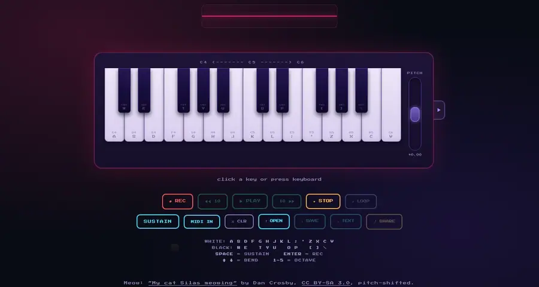
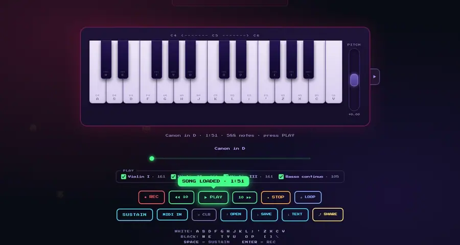
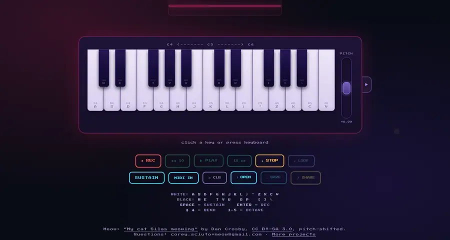
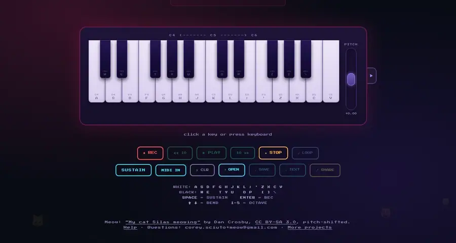

Playing
- Click the keys, or use the computer keys printed on them (A is C).
- Space or SUSTAIN is the pedal: notes keep sounding after you let go.
- Drag the PITCH wheel, or hold ↑ ↓, to bend up to two semitones. Let go and it springs back.
- 1–5 pick the octave; the label above the keys shows the range.
Opening a song
OPEN reads a MIDI file (.mid), such as the Canon above. Each instrument in it gets a checkbox; uncheck one to leave it out. Drums start unchecked.

Play, pause, skip
- PLAY becomes PAUSE while a song plays. STOP goes back to the start.
- ◀◀ 10 and 10 ▶▶ jump ten seconds. Drag the bar to go anywhere.
- Keys light green as the song plays. Notes below or above the keys in view are counted at the edges (◀ 1); change the octave to see them.

Recording
REC (or Enter) records the keys, the pedal and the wheel; STOP ends it. Click untitled to give it a name.

The sound
The ▶ tab beside the keys opens the settings. IN and OUT pick the part of the meow that holds while a key is down; GRAIN and SCATTER change its texture; A4 tunes the whole piano (440 is standard).

A MIDI keyboard
Plug one in and press MIDI IN. Its keys, pitch wheel and sustain pedal play the piano and record like everything else, with no limit on keys held at once. Chrome, Edge or Firefox; Safari has no MIDI. The keyboard's own octave buttons move its notes. Press MIDI IN again to turn it off, so the keyboard plays only your other music app.
Good to know
- A link fits about five minutes of playing, less if it's busy. A longer song's link keeps its last part, and the status warns you (LINK: LAST 4:51). SAVE keeps everything.
- Laptop keyboards register only a few keys at once, so big chords plus ↑ can drop notes. Hold the chord with Space and let go of the keys, or use a MIDI keyboard.
- The computer keys and the mouse play at one loudness. A MIDI keyboard plays louder the harder you hit it, and a MIDI file keeps its own dynamics.
- Sound starts after your first click or key press on the page.